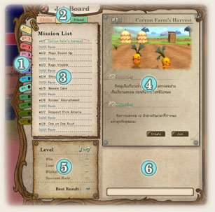
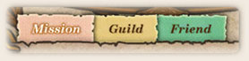
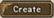
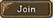
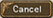

|
|
|
|
|
|
| |
ลักษณะทั่วไปของมิชชั่น
- มิชชั่นเป็นหลักที่ใช้ในการดำเนินเนื้อเรื่อง และพัฒนา
- เมื่อต้องการทำมิชชั่น ให้ไปคุยกัยแพนด้าแดง ในกิลด์ได้ตลอดเวลา
- วิธีผ่าน(Objective) ของแต่ละมิชชั่นนั้นแตกต่างกันไป ตั้งแต่กำจัดศัตรู
ไปให้ถึงจุดหมาย คุ้มกัน หาของ และอื่นๆอีกมากมาย
- ให้ระวังเกี่ยวกับเงื่อนไขต่างๆ ของมิชชั่นด้วย เพราะถ้าพลาดจะทำให้ Mission Failed ได้
- แต่จะไม่มีการเสีย EXP เงิน หรือไอเทมใดๆ เมื่อ Mission Failed หรือตัวละครตาย
- เราต้องผ่านมิชชั่นนั้นๆ ก่อน ถึงจะมีมิชชั่นต่อไปขึ้นมาให้ทำ
|
|
|
| |
 |
1. เลือก Chapter
2. เลือกดูห้องเพื่อนหรือสมาชิกในกิลด์เปิดไว้
3. รายชื่อมิชชั่นที่ทำได้
4. รายละเอียดเกี่ยวกับมิชชั่นที่เราเลือก
5. ระดับเลเวลที่สามารถทำมิชชั่นได้ /
สถิติของเราในมิชชั่นนั้น
6. Chat Box
|
|
การเข้ามิชชั่น
-หลังจากคุยกับแพนด้าแดงแล้ว จะขึ้นหน้าเมนูดังภาพ
สามารถเลือกมิชชั่นที่ต้องการทำจาก Mission List ด้านซ้าย
- คลิกปุ่ม 
ตรงหน้าต่างรายละเอียดมิชชั่น
ด้านขวาเพื่อทำการเปิดห้องใหม่
|
|
| |
การจอยมิชชั่น
- เราสามารถเข้าจอยมิชชั่นที่มีคนสร้างห้องเอาไว้แล้วได้ โดยเลือกมิชชั่นที่ต้องการ
แล้วคลิกปุ่ม 
ทางหน้าต่างด้านขวา
- Guild และ Friend ใช้สำหรับดูห้องที่มีเพื่อน หรือสมาชิกกิลด์เปิดไว้แล้ว
- หลังจากจอยแล้วรอผู้สร้างห้องกดเริ่ม หรือต้องการออกให้คลิกปุ่ม 
|
|
| |
|